← 返回阅读库 · 原论文目录
论文讲解阅读文档 · 机器人学 · v127
A Self-Improving Generalist Agent for Robotic Manipulation[2306.11706]
视频时长 00:12:11；讲解文字 5,122 字符；提取讲解画面 37 张。按视频原顺序阅读，每段文字保留时间戳。
文字来自整段视频的自动语音转写，按自然停顿分段，并与 PPT / 论文页面 / 演示画面对齐。未将讲解压缩为摘要；术语、数字和口述公式请结合画面及原论文核对。 阅读稿已校正规范部分明确术语误识别；原始逐字稿和每处修改记录另行保留。
讲解画面为源视频截图（640×360），不是可编辑 PPT 文件。全片按每秒 2 帧扫描内容变化，逐步展开页保留；连续动画保留代表画面。清晰度受源视频限制。
下载完整资料包 · 含离线 HTML、PDF、Word、全部 PPT 画面和字幕。
原论文与材料
RoboCat: A Self-Improving Generalist Agent for Robotic Manipulation · 下载完整 PDF（60 页）
按时间阅读
00:00:00–00:00:31 · 画面 001
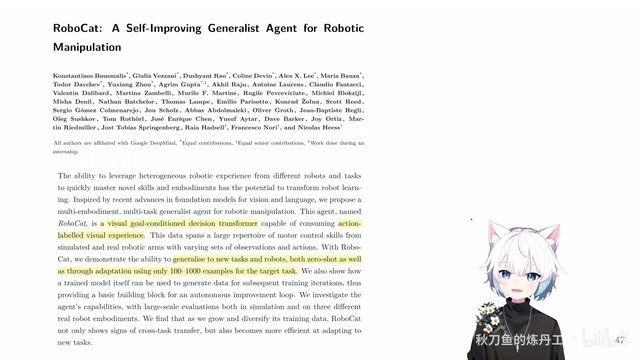
00:00:00–00:00:31 · 画面 001大家好,今天我们来快速水一篇论文 Robot Cat, a self-improving generalist agent for robotic manipulation这一片呢很明显你可以看到它是之前我们介绍了那个 gato 它的延伸那更具体来说呢就是我们用了一个这个 goal condition decision transformer 然后呢把我们的任务限定在这个机器人特别是在桌面上的机器人一个机械手他的操作这样的任务上他的思路也是一样的用大量的数据去训一个模型然后这个模型它是一个 goal condition 的
00:00:31–00:01:18 · 画面 002
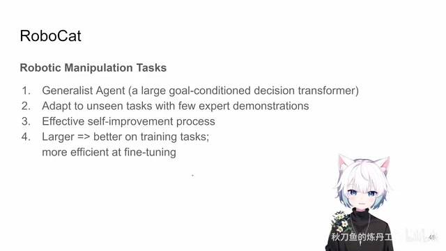
00:00:31–00:01:18 · 画面 002想要探讨的东西也是一样的就是我们能训出来这样一个 generalist agent 他首先能够在已经见过的任务上做得很好然后能够去在只有少量的专家的 demonstration 的情况下能去做一些没见过的任务然后同时本文重点是强调了我们有一个 self-improving 的这么一个框架其实它这个框架也是非常直接的一个框架最后作者同样的跟 Gato 一样的也是是不是我们把我们的模型数据堆起来在建构的任务上我们效果会更好在 fine-tune 的时候去适应新的任务的时候会变得更容易那么这个是本文的核心的一些点那么在继续之前还是希望你先熟悉 Gato
00:01:18–00:01:19 · 画面 003
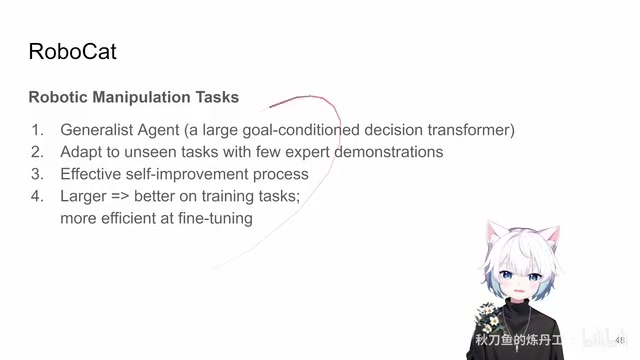
00:01:18–00:01:19 · 画面 00300:01:19–00:01:36 · 画面 004
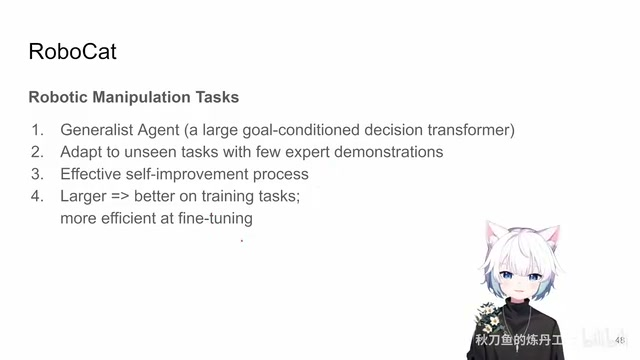
00:01:19–00:01:36 · 画面 004那篇文章的呈现也是非常清楚的那么你在熟悉完了之后呢我们在这个视频里面就简单的说一说本文这个 Robocat 和 Gato 它们的一些显著的区别首先最开始的就是这个 tokenization 的过程中
00:01:36–00:01:41 · 画面 005
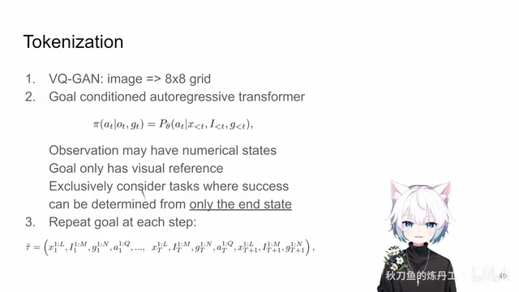
00:01:36–00:01:41 · 画面 005本文最核心的就是用了一个 vqgan 它来去编码图像我们如果快速回忆一下这个 gato 里面它是直接用的 vit 的思路把一个图像拆成一个 patch 然后每一个 patch 我是过了一个 resnetresnet 也就是一层一个 residual block 我就加上各种 positional encoding 就作为一个 embedding 就送到我们的 transformer 里面了
00:01:41–00:01:43 · 画面 006
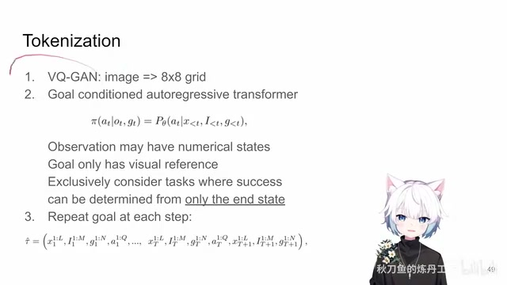
00:01:41–00:01:43 · 画面 00600:01:43–00:02:24 · 画面 007
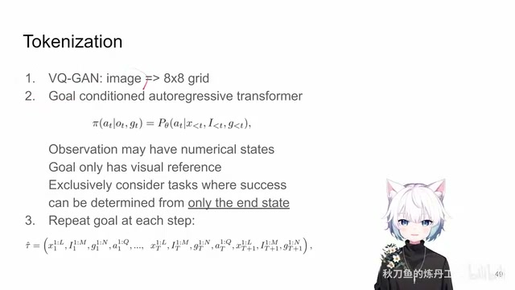
00:01:43–00:02:24 · 画面 007那么本文发现呢我如果加一个 vqgan 然后呢用大量的跟机器人相关也好无关也好的这样的数据集去 pretrain 这个 vqgan 那它来处理图像这样子呢会取得更好的结果那么这里呢每一张图像就是 8x8 的这么一个网格也就是 64 个 token 这是最核心的一点那么第二点呢就是我们这个 episode 它的这个序列是怎么构建的
00:02:24–00:02:25 · 画面 008
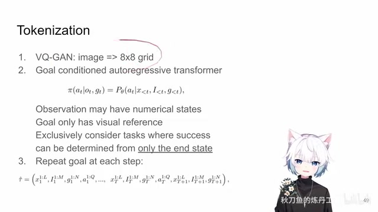
00:02:24–00:02:25 · 画面 00800:02:25–00:04:20 · 画面 009
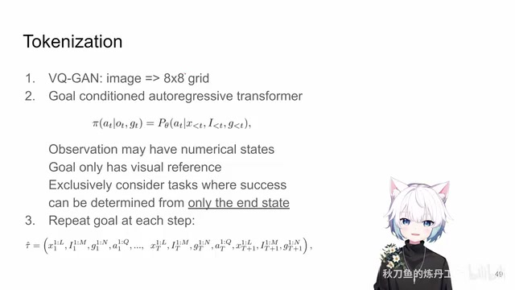
00:02:25–00:04:20 · 画面 009那么本文呢区别于 gato 他用的是这个 prompt engineering 他前面用整个 expert episode 作为一个 prompt 来告诉我们这个任务应该怎么样本文呢使用了一个更直接的方法就是 goal condition 也就是说我的 policy 每一步同时能够看到当前的 observation 还有我当前的这个 go 然后呢去产生这个 action 那注意这里呢这个 observation 它可能是图像同时呢也会包含比如说我的机械臂的关节啊这种数字的状态
但是这个 go 呢它就是单纯的我们的这个图像同时呢你看到在它这个问题的定义的情况下那我们就只能关注一些就一张图能够决定最后的任务成功与否这样的任务而不能去处理像比如说中间轨迹啊过程有影响的这样的任务那么这个呢是对它所解决问题的一个重要的限制那么我们的 policy 既然这样定义好了我们的这个一个 episode一个 tradition它应该长什么样子呢我们来看到这里那这里呢跟 gato 很像也是一个 episode 里面不同的时间我们这么来堆那对于每一个时刻来讲x它这里有 elga token
这 elga token 对应的就是这些数值上的 state比如说每个关节的角度啊例句等等这是 x然后呢是你当前观察的图像然后呢是这个 go那对于一个 tradition 来说你最后的 go 都是一样的所以说呢你这个 token 会一变一变的重复下去都是这一串这个 token那最后呢是你这一步执行的 action那这四个东西组合在一起就是我们的一个当前的一个 time step 然后你就不断的重复重复重复就好了你这样子呢就把一个 trajectory 就给它表示出来了还是你看对比之前的这个 gato 那 gato 里面它用的是专家的这个 demonstration 作为 prompt 然后呢后面就是正经的 episode 那本文的这个构架明显在你这个 trajectory 的长度受限制的情况下是有优势的
00:04:20–00:04:21 · 画面 010
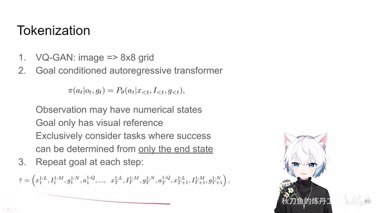
00:04:20–00:04:21 · 画面 01000:04:21–00:04:29 · 画面 011
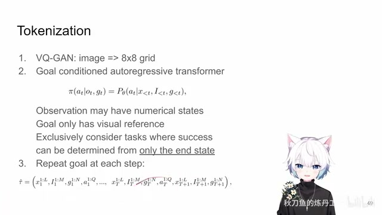
00:04:21–00:04:29 · 画面 01100:04:29–00:04:32 · 画面 012
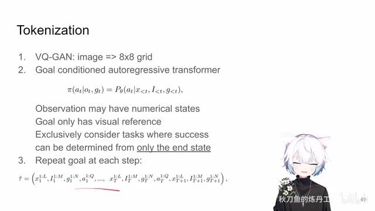
00:04:29–00:04:32 · 画面 01200:04:32–00:04:45 · 画面 013
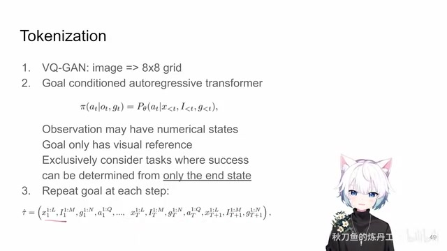
00:04:32–00:04:45 · 画面 013因为你实际这个 strategy 就是 1024 个 token 它装不了几个 timestamp 你前面如果加 prompt 的话你过不了几步前面的 prompt 就完全消失了那么对于本文来说你哪怕把前面几个 timestamp 都扔掉你每一个 step 里面都有一个 go 这样的设计感觉上是会更合适一点那么再往下我们来关注一下这个 go 它是怎么来的
00:04:45–00:04:47 · 画面 014
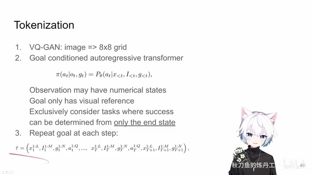
00:04:45–00:04:47 · 画面 01400:04:47–00:05:02 · 画面 015
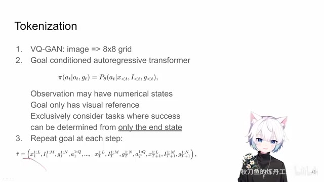
00:04:47–00:05:02 · 画面 015那这里呢作者说啊对于印象一些非成功的就是啊我这个任务最后没有办成的这个 go 那我就用最终的这个图像的这个状态
00:05:02–00:06:04 · 画面 016
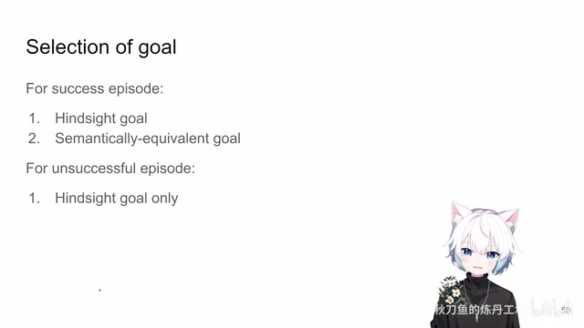
00:05:02–00:06:04 · 画面 016来给它标记一下对吧你种瓜得瓜种豆得豆你沿着这个操作下来最后呢就得到这样一个结果那你就这么做就没问题但是呢如果对于是一个成功的这么一个 episode 你把这个事情办成了那这里呢作者说我可以加一些 augmentation 也就是说我不仅用你最后办成的这个事情这个 go 这个图像来作为我的这个 go同时我也可以找一些其他的 trajectory 做相同任务的其他的 trajectory 他们最后的实现了这个 go 因为他们在语义上都是相同的因为我们说了之前本文的研究的所有的 task 都是你最后一张图来决定你的任务是否成功的所以你就去其他的 trajectory 其他的 episode 去抓一个最后的图过来只要它是成功的那么这个 go 也是应该是可以用的这里是作者对这个 go 的选择
00:06:04–00:06:05 · 画面 017
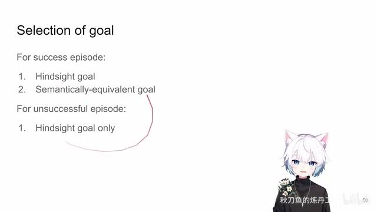
00:06:04–00:06:05 · 画面 01700:06:05–00:06:12 · 画面 018
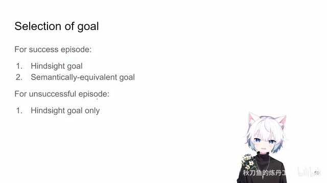
00:06:05–00:06:12 · 画面 018这样的一个设计那么再往下呢我们就来看怎么开始训练这个模型了因为在这个本文中引入了一个 VQGAN 所以呢一开始呢作者会先去用一个庞大的多样的这样一个数据集你甚至看到有 ImageNet、Atari 这样的任务把这些的数据集拿起来一起去训练这个 VQGAN 那训练好之后呢就把它的图像的 encoder 给固定住
00:06:12–00:06:22 · 画面 019
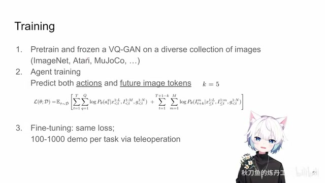
00:06:12–00:06:22 · 画面 01900:06:22–00:06:24 · 画面 020
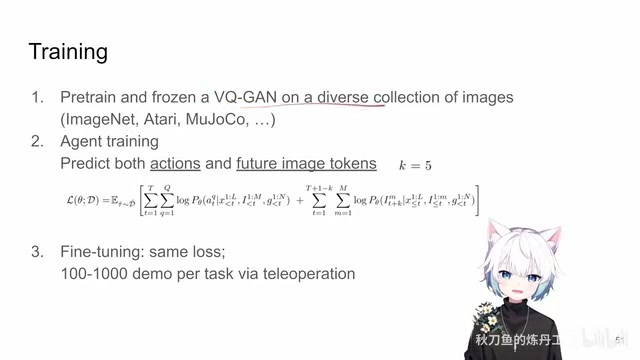
00:06:22–00:06:24 · 画面 02000:06:24–00:07:25 · 画面 021
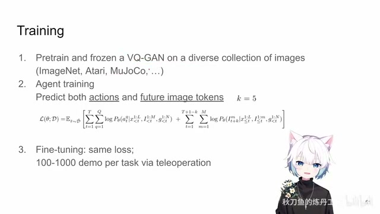
00:06:24–00:07:25 · 画面 021那么这个 VQGAN 我们之前也介绍过了就是 VQVAE 加上一个 discriminator 它的核心呢就是在于这个 VQ 嘛你的一张图像进来每一个 patch 都可以被投影到一个字典里面得到一个离散的值然后呢这个值在字典里面对应了一个固定的 vector 固定的 embedding 那这个呢是 VQ然后你过完 pre-training 把 encoder 动好我们就可以做真正的模型的训练了你想一个 decision transformer 它怎么训练无非就是 future token prediction 和 Gato 是一样的但是我们注意这里 Gato 里面是把 text 和 action token 我们在那些 token 上面加了监督信号
那本文呢没有 text 我们就把 text 拿去 action 有的注意呢这里作者还做了这个 future image tokens prediction 这一点是在 gato 里面没有的那作者发现呢因为我们这里现在有了一个 vqgan 了所以呢预测一下未来的这个图像呢是有帮助的而这个图像呢它也不是随便的一张图像那它是未来第五步的这个图像
00:07:25–00:07:26 · 画面 022
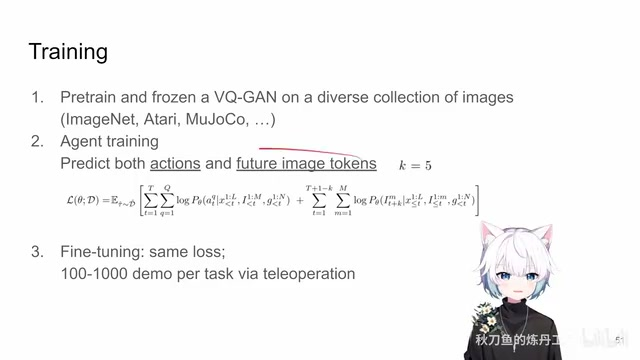
00:07:25–00:07:26 · 画面 02200:07:26–00:08:21 · 画面 023
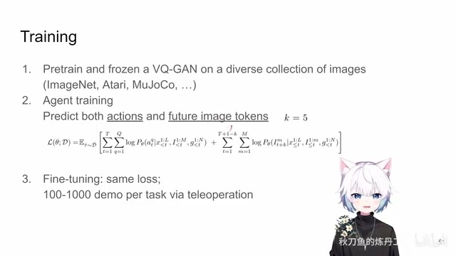
00:07:26–00:08:21 · 画面 023你可以看到它并不是未来的第一步或者第二步它是选了第五步为什么呢因为作者说两个 state 之间两个图像之间相邻的两个图像之间它们可能区别是比较小的你预测它意义显得不是那么明显那这个步子放的稍微大一点预测到未来第五步这个是作者的一个设计那你做完这个 pretrain 做完 agent 这个 train 你就可以相当于在我们已经有了这些数据的任务上你就可以去做评估做部署了那么再往下呢你假如说现在有来了一个新的任务那新的任务怎么做呢你还是用相同的 loss只不过拿到一个新的任务之后我需要人工的去收集 100 甚至是 1000 个 demo 这些 expert trajectory 在这些数据集上去 fine-tune 我们的模型这样子我们的模型就能够去做新的任务了这是一个非常简略的这么一个训练的流程它的核心跟 Gato 的区别就是 VQGAN 和 Future Image Prediction
00:08:21–00:08:23 · 画面 024
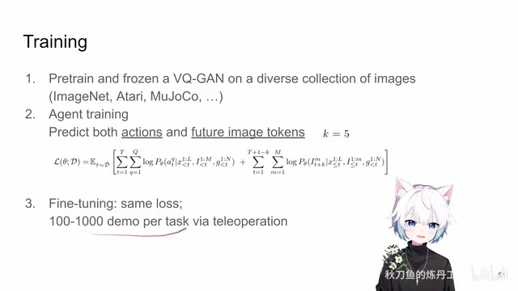
00:08:21–00:08:23 · 画面 02400:08:23–00:08:28 · 画面 025
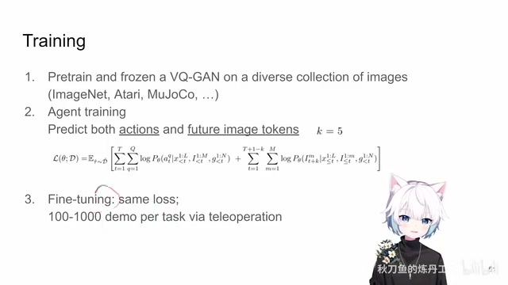
00:08:23–00:08:28 · 画面 02500:08:28–00:08:29 · 画面 026
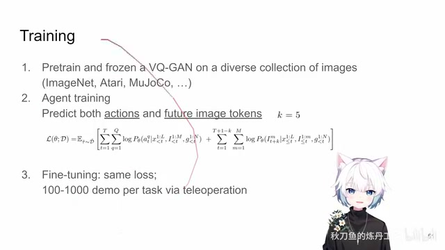
00:08:28–00:08:29 · 画面 02600:08:29–00:08:36 · 画面 027
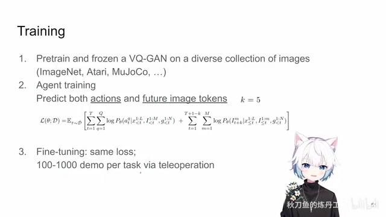
00:08:29–00:08:36 · 画面 02700:08:36–00:08:37 · 画面 028
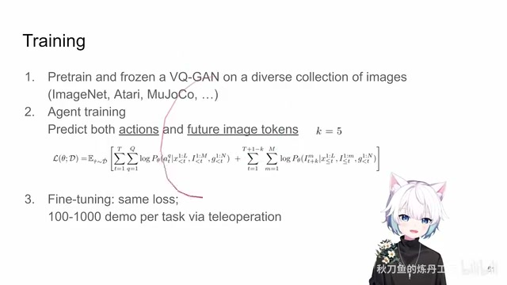
00:08:36–00:08:37 · 画面 02800:08:37–00:08:46 · 画面 029
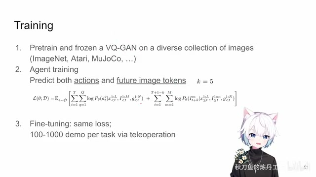
00:08:37–00:08:46 · 画面 029那么当然这里因为 future image 它也是经过 vq 干出来的这些 token 所以呢我们预测的也是 token 所以它还是一个 cross entropy loss 那么然后呢我们就来看到本文一直在强调的这个 self improvement 就是我这样的一个模型怎么样去不断的去改进它让它去能够学习新的任务得到好的结果
00:08:46–00:10:46 · 画面 030
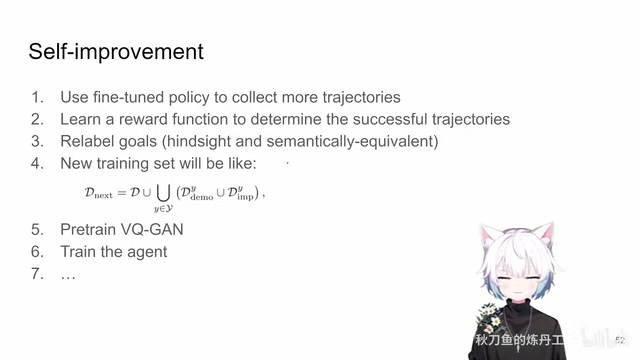
00:08:46–00:10:46 · 画面 030我们来看到呢我们假如说我们现在有了一个新的任务已经请专家帮我们收集好了 1000 甚至 100 个这个 trajectory 那新的 trajectory 呢就是在这个 y 任务上的这个 demo 那么然后呢你就 fine-tuning 嘛 fine-tuning 好了之后呢你拿这个 fine-tuning 好的 policy 去在这个环境里面收集更多的 trajectory 那这些 trajectory 呢构成这个 improvement 这样的一个数据集有了这个新的数据集是不是我们就可以直接把这些 trajectory 拿过来去训练了呢
当然这里有一个很关键的点就是我们并不知道我们的这个新的 fine-tuning 好的 policy 收集到了这个 trajectory 它是成功的还是失败的就是它究竟有没有把这个任务做完这个我们是不知道的因此呢这里作者的解法是也是很直接的一个方法也是很常用的一个方法就是我们去学一个 reward function确切来说是一个 Binary Classifier 你看它标记的数据也是在哪一张状态之后我们的任务算是成功了就是去学这么一个 Binary Classifier 来判断哪些 trajectory 是成功了哪些 trajectory 是失败的为什么要判断它因为我们之前说了我们在 Augmentation 的过程中是要根据
这个 trajectory 的成功或者失败与否来确定我们的每一个 trajectory 的 go 是应该怎么加的那失败的 trajectory 就直接用 hindsight goal 就是你这个 trajectory 最后的那张图那么成功的 trajectory 呢我们有的还需要用这个 semantically equivalent 就是其他成功的 trajectory 它最后的这个图像来作为我们的 data augmentation 来作为我们新的 go 所以呢它会去学这么一个 reward functionreward classifier
那最后呢你有了这样的一个新的数据集 improvement 有了这个新的 demo 你再加上你以前的这个训练的这个庞大的数据集你把所有的这一通都加起来
00:10:46–00:10:56 · 画面 031
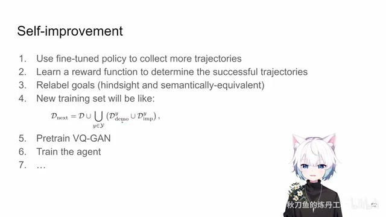
00:10:46–00:10:56 · 画面 031重新再把你的训练流程走一遍甚至是从培训开始走的培训 VQ 干好然后把 agent 搞一遍那你又回到了你之前一开始的这个循环你就可以继续去收集新的任务去反吞等等这样一通操作做下来那么这个呢就是作者所说的这个 self improvement 这样一个框架真的是非常直接的一个框架那么论文中呢还有非常详细的实验感兴趣的朋友呢非常推荐你到原文查看包括他的每一部
00:10:56–00:10:57 · 画面 032
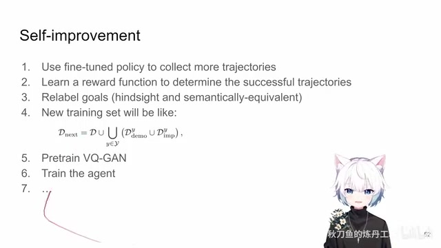
00:10:56–00:10:57 · 画面 03200:10:57–00:11:08 · 画面 033
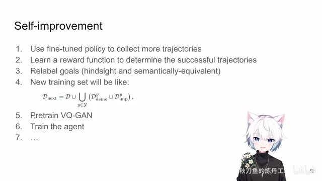
00:10:57–00:11:08 · 画面 03300:11:08–00:11:09 · 画面 034
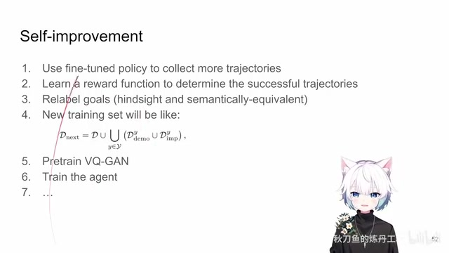
00:11:08–00:11:09 · 画面 03400:11:09–00:11:29 · 画面 035
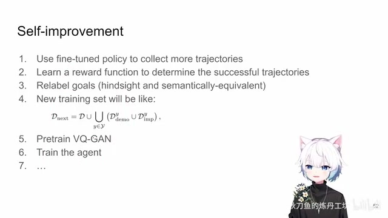
00:11:09–00:11:29 · 画面 035比如说它的数据的在训练过程中不同数据集的数据均衡怎么做其实是很有意思的总的来说呢这一篇相对于这个 Gato 虽然它是精神上的延续但是呢它就少了这么一些神仙气啊它就是一个更实际的我们关注在这个 RoboticsManipulation 在桌面上的一个机械臂操作这样一个问题那么相比于 Gato 呢它提出了一个 Self Improvement 的概念那在它具体的实现上呢我们的视觉上有 VQGAN
00:11:29–00:12:11 · 画面 036
00:11:29–00:12:11 · 画面 036我们要单独 pre-train 一下 VQGAN 然后每一个 trajectory 用的是 goal condition 的这样一个设置最后在 loss 上我会 predict future image tokens 这是它和 Gato 的一些比较主要的区别好的那么以上就是我对这篇文章的一个非常快速的一个梳理那么感谢您的收看请多多指点
00:12:11–00:12:11 · 画面 037
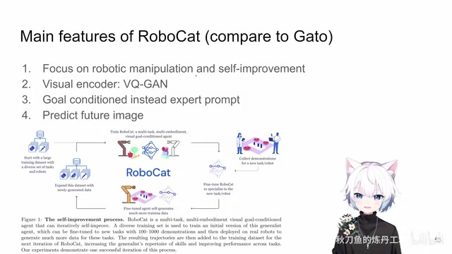
00:12:11–00:12:11 · 画面 037转写与来源说明 · 0 个自动复核提示
保留 70 个原始语音片段，0 个片段触发自动复核提示。提示仅用于定位可能的术语、重复或识别问题，不等于已确认错误。
讲解画面为源视频截图（640×360），不是可编辑 PPT 文件。全片按每秒 2 帧扫描内容变化，逐步展开页保留；连续动画保留代表画面。清晰度受源视频限制。
原视频：paper/合集_2026-10-16_机器人学/[论文速览]A Self-Improving Generalist Agent for Robotic Manipulation[2306.11706].mp4
SHA-256：75a09fd4272ef1bd7cbe3379f444ea8f553845c4eb500fcc4153b0d1fd9fe7fa
全文按视频语音与画面制作。原论文可从上方链接下载；完整资料包保留全文、原始逐字稿、字幕和校对记录。